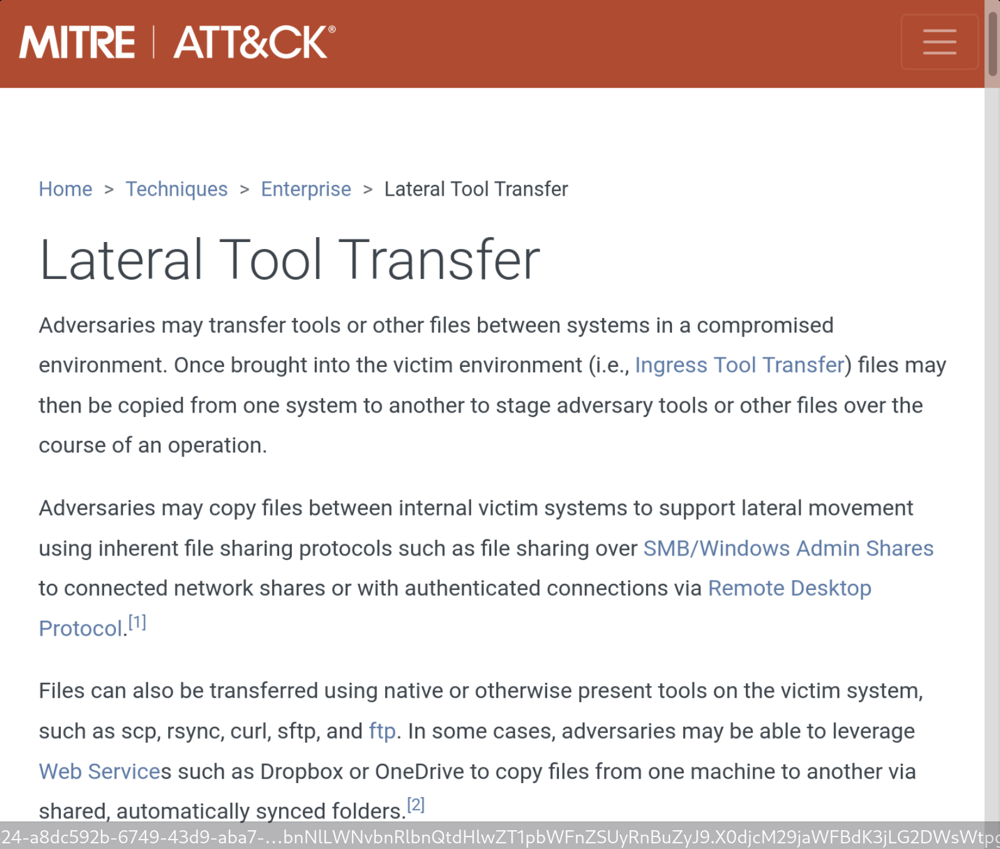
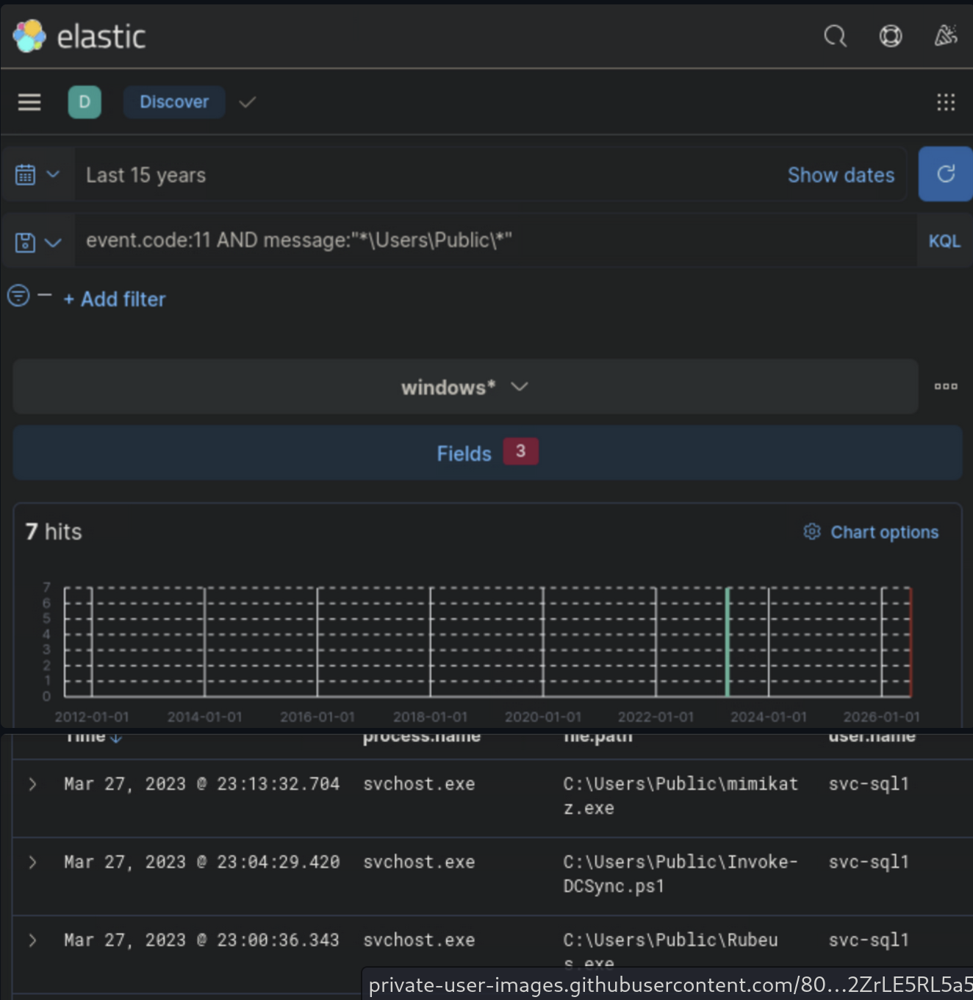
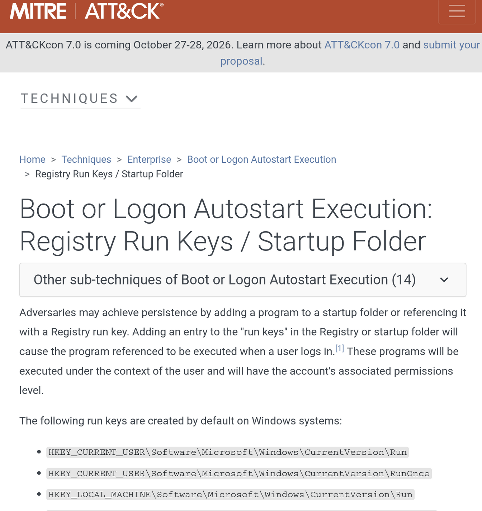
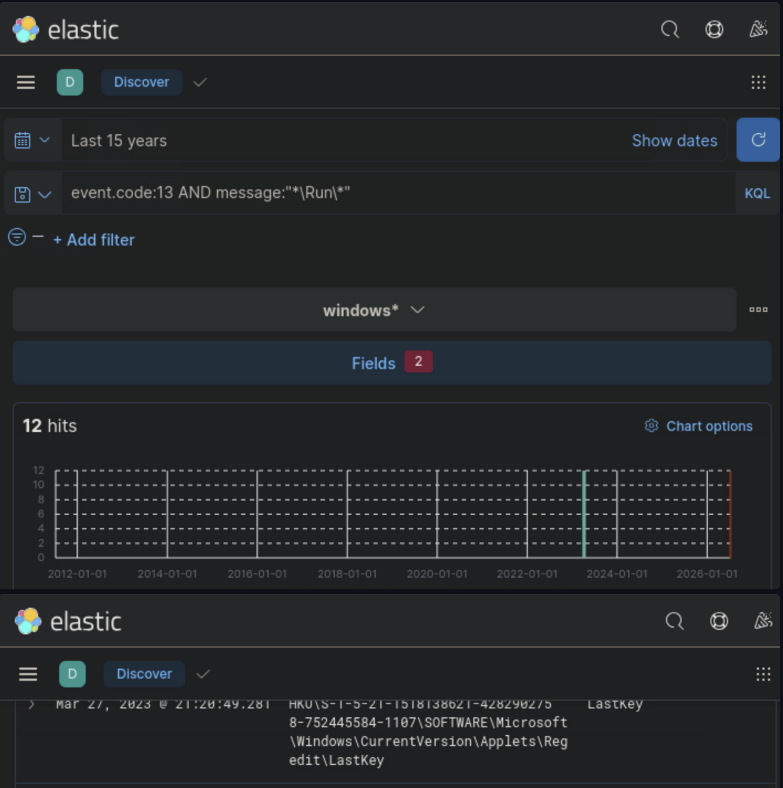
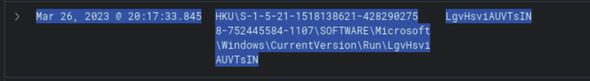
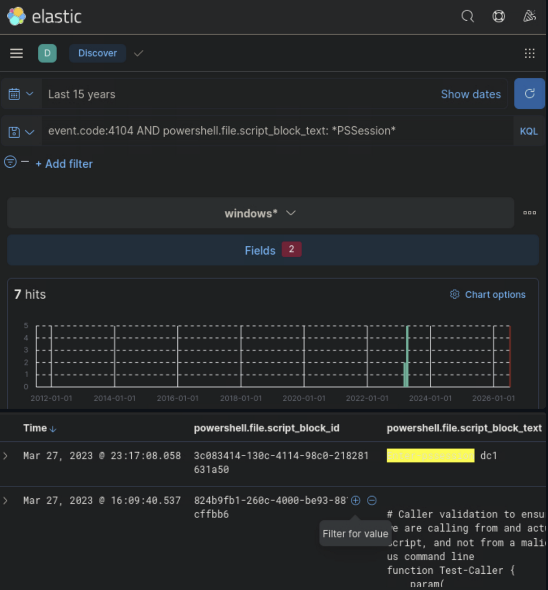

An educational Blue Team case study documenting how I used Elastic SIEM, Sysmon, Windows telemetry,
PowerShell Script Block Logging, and KQL to validate three threat-intelligence reports and reconstruct
a realistic post-exploitation attack chain.
MITRE ATT&CK Elastic SIEM Completed Hack The Box
Executive Summary
This project documents a complete threat-hunting investigation performed in Elastic SIEM against a simulated
enterprise environment infected with the latest iteration of Stuxbot.
The investigation focused on validating three intelligence reports:
Lateral Tool Transfer to C:\Users\Public
Registry Run Key persistence
PowerShell Remoting used for lateral movement toward a Domain Controller
I correlated Windows Event Logs, Sysmon, and PowerShell Script Block Logging, then mapped the observed behavior
to MITRE ATT&CK. The evidence validated all three intelligence reports and revealed a post-exploitation chain
involving offensive-tool staging, persistence, and lateral movement toward DC1.
3Threat Hunts Completed
3MITRE Techniques Mapped
7Key IOCs Identified
Why I Did It • What I Did • What I Learned
Why I Built This Project
I wanted to move beyond simply reading alerts and practice a full threat-hunting workflow. The goal was to
learn how analysts take threat intelligence, translate it into searchable hypotheses, find supporting
telemetry, and build an evidence-based conclusion.
What I Did
I created KQL hunts for file creation, registry modification, and PowerShell remoting activity. I reviewed
event details, identified offensive tooling and a suspicious Run Key, confirmed remote access to DC1, and
documented containment, eradication, and recovery actions.
What I Learned
I learned how Sysmon Event IDs 11 and 13 expose file and registry activity, why PowerShell Event ID 4104 is
valuable for script-level visibility, and how multiple small artifacts can be correlated into a coherent
attack chain instead of being treated as isolated events.
Lab Environment & Data Sources
SIEM Platform
Elastic Stack — Discover
I used Elastic Discover to search and pivot through endpoint and PowerShell telemetry.
Available Telemetry
Windows Event Logs
Sysmon
PowerShell Logs
Zeek
Why this matters to a SOC analyst
Threat hunting starts with a hypothesis. The analyst then identifies the telemetry source most likely to prove
or disprove that hypothesis. In this project, Sysmon was critical for endpoint activity while PowerShell
Script Block Logging provided visibility into the actual commands used for lateral movement.
Sysmon Event ID 11 records file creation events. That makes it a strong telemetry source when hunting for dropped or transferred tools.
Why search the message field?
The message field contains the complete human-readable event details, including the full path. Filtering for *\Users\Public\* narrows the hunt to the directory named in the intelligence report.
Analyst Finding
The hunt identified multiple offensive-security tools, including Mimikatz, Rubeus, SharpHound,
Invoke-DCSync.ps1, DomainPasswordSpray.ps1, and payload.exe. The transferred tool beginning with
R was Rubeus.exe, created under the svc-sql1 account.

MITRE ATT&CK reference — Lateral Tool Transfer (T1570), the technique used to frame the first hunt.

Elastic Discover evidence — Sysmon Event ID 11 filtered for C:\Users\Public, revealing offensive tools including Rubeus and Mimikatz under svc-sql1.
Hunt 2 — Registry Run Key Persistence
Objective: Identify persistence created through Windows Registry Run Keys.
KQL Query
event.code:13 AND message:"*\Run\*"
Why Event ID 13?
Sysmon Event ID 13 records Registry Value Set activity. This allows an analyst to see when a process creates or modifies a registry value.
Useful Registry Fields
registry.path
registry.value
The full event message
Analyst Finding
The first suspicious registry value identified was LgvHsviAUVTsIN. Its random-looking value
name and location under a Run Key were consistent with persistence behavior rather than a normal,
easily attributable startup entry.

MITRE ATT&CK reference — Registry Run Keys / Startup Folder (T1547.001), used to frame the persistence hunt.

Elastic Discover evidence — Sysmon Event ID 13 filtered for Run Key modifications.

Key persistence evidence — the suspicious randomized Registry Run value LgvHsviAUVTsIN.
Hunt 3 — PowerShell Remoting
PowerShell Remoting allows administrators to execute commands remotely using WinRM.
That functionality is legitimate, but it can also be abused to execute commands across systems and move
laterally without an interactive desktop session.
KQL Query
event.code:4104 AND powershell.file.script_block_text:*PSSession*
Why Event ID 4104?
PowerShell Script Block Logging records the PowerShell code that was executed. This gives defenders visibility
into command content that may not be obvious from process creation alone.
Analyst Finding
The script block contained Enter-PSSession dc1, showing that the attacker initiated a remote
PowerShell session to DC1 using the compromised svc-sql1 account.

PowerShell Script Block Logging evidence — Event ID 4104 exposes Enter-PSSession dc1, confirming remote PowerShell activity toward the Domain Controller.
Reconstructed Attack Chain
Looking at the artifacts together was more valuable than treating each alert independently. The evidence
supports a progression from compromised credentials to tool staging, persistence, and lateral movement.
Initial Compromise
Compromise of svc-sql1
Tools Copied to C:\Users\Public
Registry Run Key Persistence
PowerShell Remoting
Domain Controller DC1
Indicators of Compromise
Indicator
Associated Purpose
Mimikatz.exe
Credential dumping
Rubeus.exe
Kerberos abuse
SharpHound.exe
Active Directory enumeration
Invoke-DCSync.ps1
Password hash replication / DCSync activity
DomainPasswordSpray.ps1
Password spraying
LgvHsviAUVTsIN
Registry persistence
Enter-PSSession dc1
Lateral movement toward DC1
Incident Response
Containment
Isolate the infected host
Disable svc-sql1
Block WinRM where unauthorized
Preserve forensic evidence
Prevent unnecessary DC communication
Eradication
Remove malicious files from C:\Users\Public
Delete the malicious Run Key
Reset compromised credentials
Investigate DC1 for DCSync activity
Recovery
Restore from clean backups if required
Verify persistence is removed
Monitor Event IDs 11, 13, and 4104
Validate attacker access is no longer present
Lessons Learned & Defensive Recommendations
Enable Sysmon on Windows endpoints to improve visibility into file and registry activity.
Enable PowerShell Script Block Logging for command-level investigation.
Restrict WinRM and PowerShell Remoting to systems and administrators that require it.
Monitor Registry Run Key modifications for suspicious or randomized values.
Create detections for known offensive tooling such as Mimikatz, Rubeus, and SharpHound.
Apply least privilege to service accounts and closely monitor privileged service-account use.
Correlate endpoint events instead of analyzing suspicious artifacts in isolation.
Use MITRE ATT&CK to connect technical evidence to adversary behavior and communicate findings consistently.
Threat intelligence validated.
Evidence showed that Stuxbot staged offensive tools in C:\Users\Public, established
persistence through Registry Run Keys, and used PowerShell Remoting to move laterally toward the Domain
Controller. The activity aligned with MITRE ATT&CK techniques T1570,
T1547.001, and T1021.006.
The most important lesson from this investigation was that effective threat hunting requires correlation.
A file creation event, a registry modification, or a PowerShell command can each appear limited on its own.
When connected by account context, timing, paths, and attacker objectives, they reveal a much clearer picture
of adversary behavior.
Acknowledgements
This investigation was completed using training and lab material from Hack The Box Academy, with supporting frameworks and telemetry from MITRE ATT&CK, Elastic Stack, and Microsoft Sysmon.